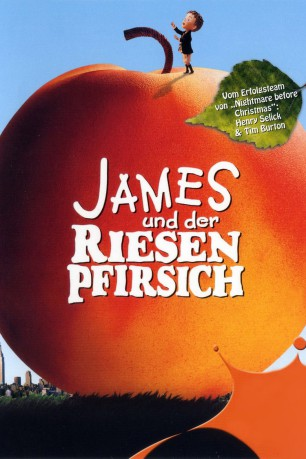

#4331 James und der Riesenpfirsich
Alternativ: James and the Giant Peach
Auszeichnungen: für 1 Oscars nominiert
 
 IMDB-Wertung: 6.7 / 10
IMDB-Wertung: 6.7 / 10  Metascore: 0
Metascore: 0 
Der kleine James wird von seinen bösen Tanten unentwegt gepiesakt. Um ihnen zu entkommen, versteckt er sich in einem verzauberten Riesenpfirsich, in dem sich einige liebenswerte Insekten eingenistet haben - von der klugen Heuschrecke über die verführerische Spinne bis hin zum neurotischen Regenwurm. Als diese von James' Problemen hören, sind sie sofort bereit, ihm zu helfen. Gemeinsam machen sie sich auf nach Amerika, um aufregende Abenteuer zu bestehen.
Jahr: 1996
Dauer: 79 Minuten
FSK: 6
Land: England Studio: BMG VideoTonspuren:
Untertitel:
Auflösung: 720p (1280x768) Größe: 3880 MB
Genre: Animation/Trick, Abenteuer, Familie, Fantasy, Musical
Regisseur: Henry Selick
Drehbuch: Samuel G. Engel
Soundtrack:
Darsteller:
Datei: X:\Kinder Filme (G-M)\James und der Riesenpfirsich (1996, FSK6, 1280x768).mkv seit 11.09.2016
Festplatte: Kinder-Filme+Trick
 Es gibt insgesamt 84 Filme in der Gruppe 'Kinder Filme (G-M)'
Es gibt insgesamt 84 Filme in der Gruppe 'Kinder Filme (G-M)'